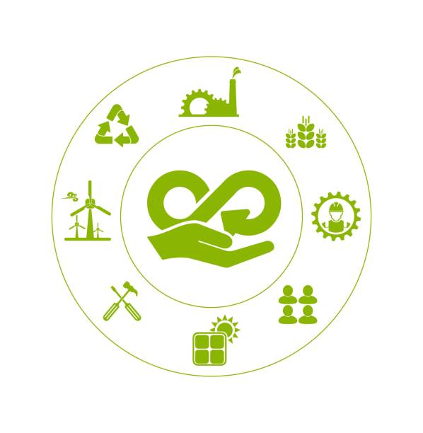
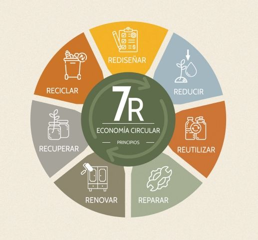
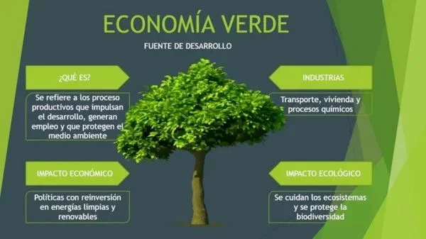

4.1 La economía circular
La economía circular es un modelo de producción y consumo que implica compartir, alquilar, reutilizar, reparar, renovar y reciclar materiales y productos existentes todas las veces que sea posible para crear un valor añadido. En este modelo, el ciclo de vida de los productos se extiende al máximo, reduciendo residuos al mínimo.
4.1.2 Características de las 3R a las 7R
Originalmente, el modelo se basaba en las 3R:
- Reducir: Minimizar el consumo de recursos.
- Reutilizar: Volver a usar productos sin necesidad de tratarlos.
- Reciclar: Transformar los residuos en nuevos productos.
Sin embargo, se ha evolucionado hacia un modelo más completo conocido como las 7R:
- Rediseñar: Pensar productos desde su origen para ser sostenibles.
- Reducir: Evitar el consumo innecesario.
- Reutilizar: Usar nuevamente sin transformar.
- Reparar: Arreglar antes de desechar.
- Renovar: Actualizar partes del producto para alargar su vida.
- Reciclar: Recuperar materiales de desecho.
- Recuperar: Obtener energía o recursos de residuos que no se pueden reciclar.

4.2 Modelos de producción y economía lineal
| Características | Economía Lineal | Economía Circular |
|---|---|---|
| Enfoque de producción | Producción, consumo y eliminación de recursos. | Reutilización, reparación, renovación y reciclaje de productos. |
| Ciclo de vida del producto | Corto, con el producto desechado al final. | Largo, con el producto reaprovechado al final de su vida útil. |
| Residuos | Generación constante de residuos y desechos. | Minimización de residuos mediante la reutilización y reciclaje. |
| Uso de recursos | Consumo de recursos de forma continua. | Optimización del uso de recursos, fomentando la regeneración. |
| Impacto ambiental | Alta huella ecológica debido al desperdicio y contaminación. | Reducción de la huella ecológica al minimizar los residuos y el uso de recursos. |
Para entender mejor la diferencia entre economía lineal y circular, mira este video explicativo:
4.3 El consumismo
El consumismo es una tendencia cultural y económica que promueve la adquisición continua de bienes y servicios, más allá de las necesidades básicas.
Causas
- Publicidad masiva
- Obsolescencia programada
- Presión social y cultural
- Créditos y facilidades de pago
Beneficios
- Dinamiza la economía
- Estimula la producción y el empleo
Desventajas:
- Generación excesiva de residuos
- Agotamiento de recursos naturales
- Aumento de emisiones contaminantes
Problemas sociales:
- Desigualdad en el acceso al consumo
- Ansiedad, estrés y frustración
- Deuda por consumo excesivo
Globalización:
- La globalización ha expandido el consumismo a escala planetaria, homogeneizando gustos y aumentando la producción en masa.
Para obtener más información y ejemplos relacionados con el consumismo, puedes descargar el siguiente documento:
Descargar PDF4.4 Economía verde
La economía verde es un modelo que busca el desarrollo económico sin deteriorar el medio ambiente. Promueve la eficiencia energética, energías limpias y una producción menos contaminante.
| Aspecto | Economía Verde | Características: |
|---|---|---|
| Uso de recursos | Recursos renovables y eficiencia | Uso eficiente de recursos |
| Producción | Procesos sostenibles | Energías renovables |
| Impacto ambiental | Reducción de emisiones y residuos | Reducción de emisiones de carbono |
| Objetivo | Sostenibilidad y bienestar | Empleos verdes |
Infografía complementaria:
4.5 Ciclo de vida de un producto
El ciclo de vida de un producto incluye todas las fases desde la extracción de materias primas hasta su disposición final. A continuación, se muestran las etapas principales:
| Fase | Descripción |
|---|---|
| 1. Extracción de materias primas | Obtención de recursos naturales necesarios para fabricar el producto. |
| 2. Producción | Procesamiento de materiales y ensamblaje del producto final. |
| 3. Distribución | Transporte y entrega del producto a los puntos de venta o al consumidor. |
| 4. Uso | Periodo durante el cual el producto es utilizado por el consumidor. |
| 5. Fin de vida | Gestión del producto al final de su uso: reciclaje, reutilización o eliminación. |